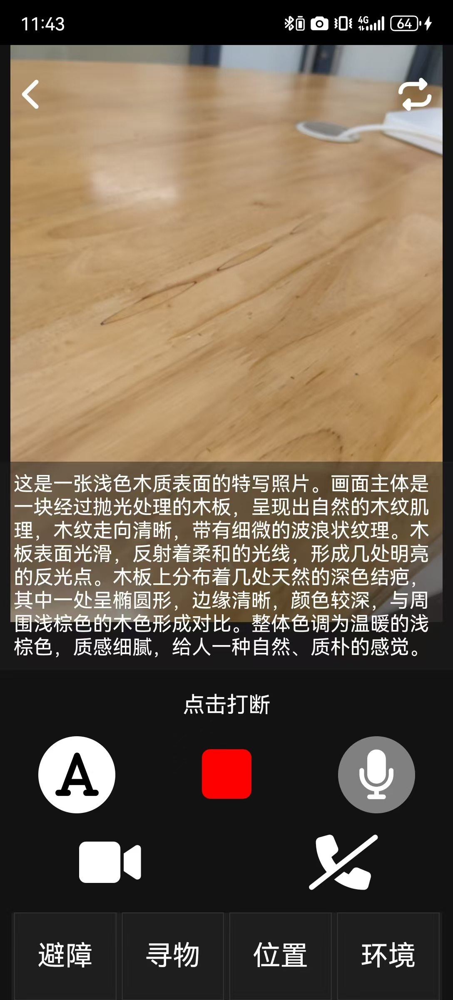
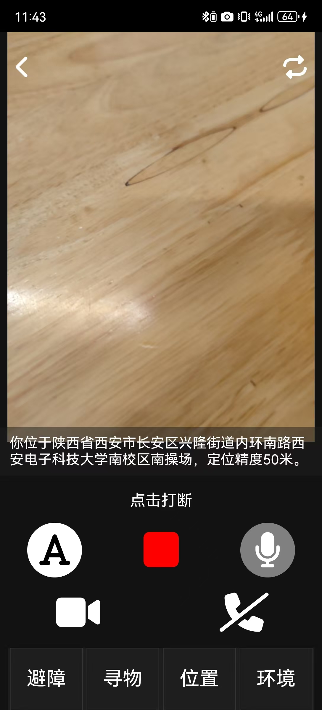
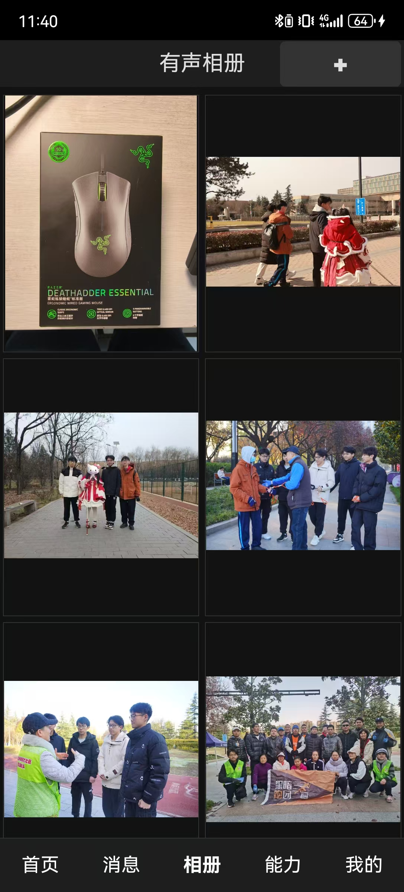

01 / Design question
如果视觉界面消失，环境该如何主动表达自己？
项目以视障用户的日常识物、定位与生活辅助为核心，把“拍照后读结果”推进为连续的环境理解：识别目标、判断空间关系、筛选信息优先级，再通过语音和声场建立方向感。
CAPTURE
RECOGNIZE
LOCATE
PRIORITIZE
SPEAK
02 / Interaction system
HEAR
THE
SCENE.
生活助手、物体识别、位置判断与相册管理被组织为同一套低视觉负担的交互系统。3D 声波场景用于表达“方向先于描述”的设计原则。
4 modes核心使用场景
Audio first非视觉反馈优先
Object + place语义与方位结合
Web prototype真实可用原型
LIVE INTERFACE / LIFE ASSISTANT


